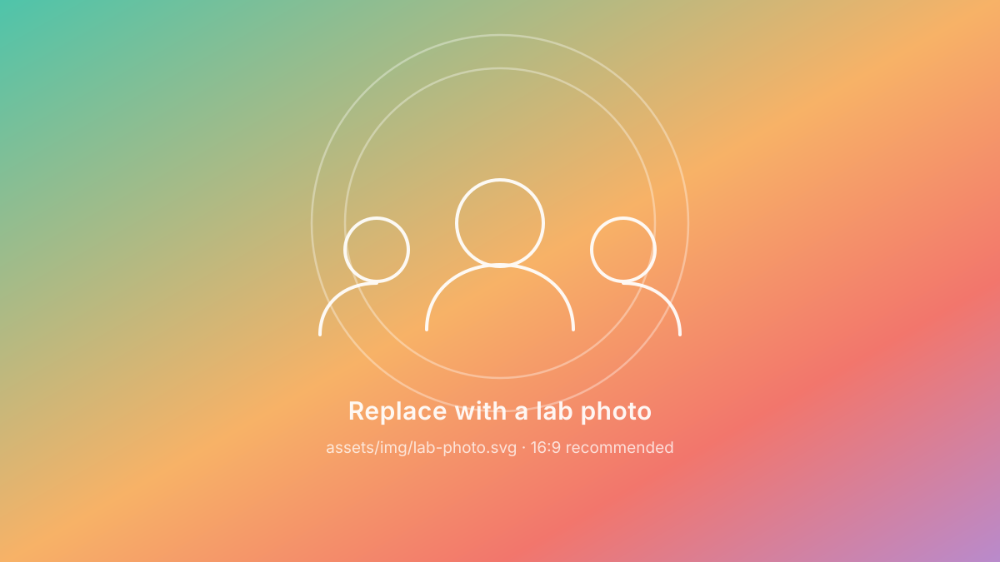

Yale University
Sensing, Networking, and AI Lab
We develop algorithms and build systems for multi-modal sensing to connect, perceive, and interact with the environment in novel ways — enabling more efficient, more robust, and more capable mobile, cyber-physical, and cyber-human systems.
What we do
Mobile and wireless systems, multi-modal sensing, computer vision, and robotics — studied together rather than in isolation.

Research directions
News
Lab updates
We are recruiting
The lab is looking for PhD students, Masters students, and undergraduate researchers who want to build sensing systems end to end — from signal processing and hardware to learning and evaluation.